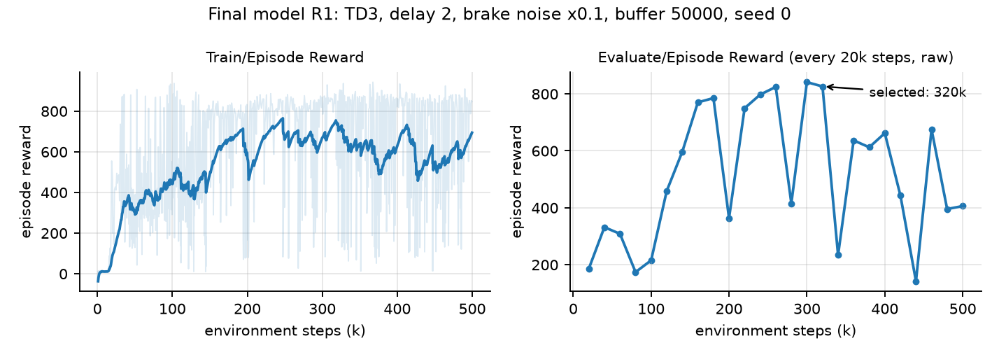
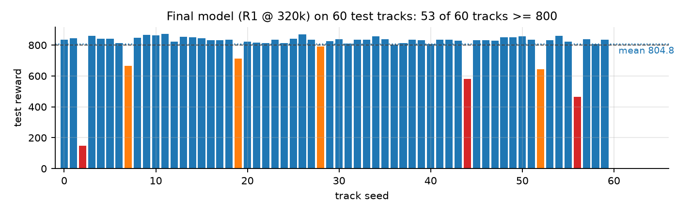
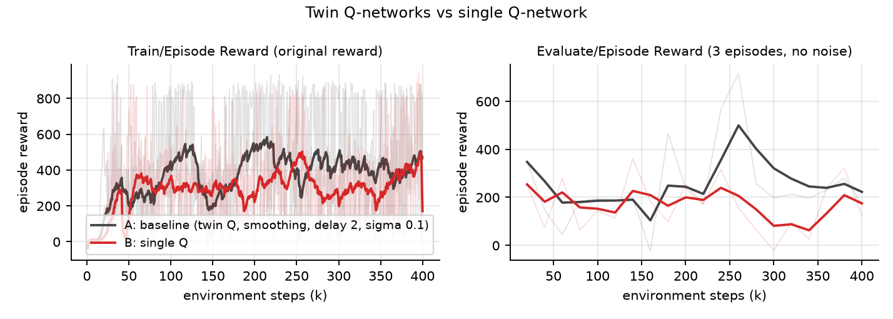
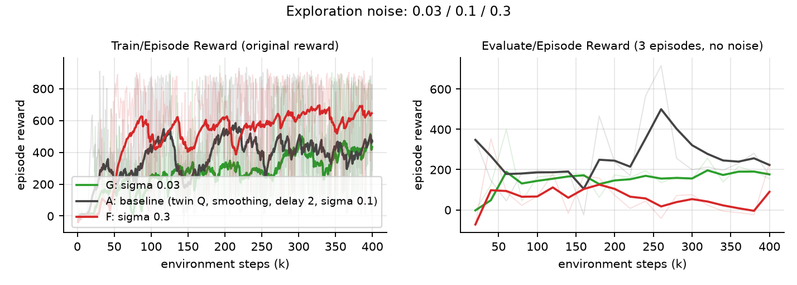
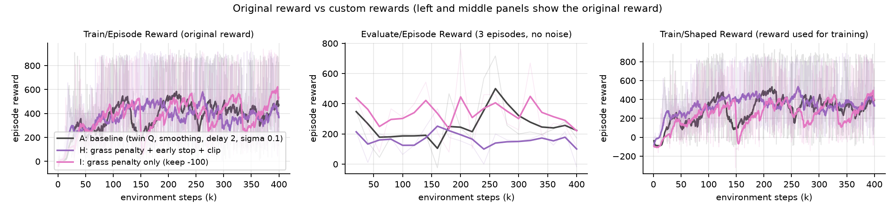
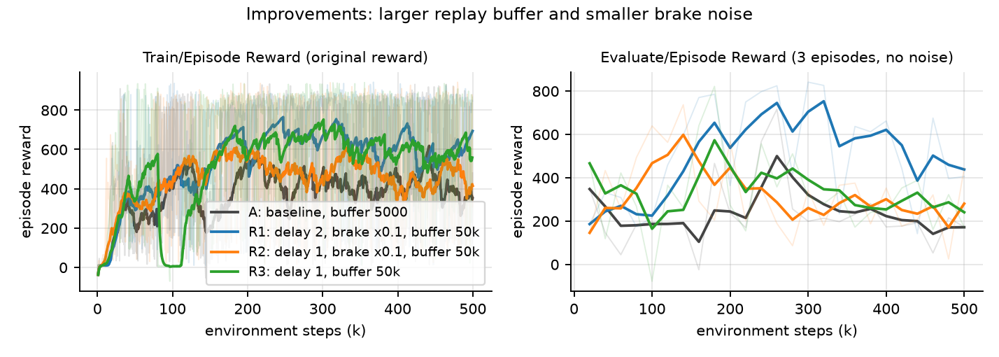
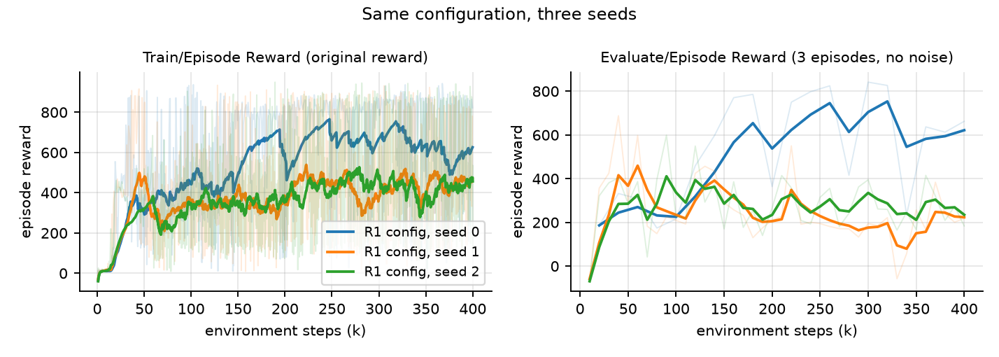

3.2 Target Policy Smoothing

網路架構與影像前處理沿用 sample code：輸入為 4 張堆疊的灰階畫面，actor 輸出 steer / gas / brake 三維動作，兩個 critic 結構相同。TD3 相對於 DDPG 的三個技巧都以參數開關控制，方便做 ablation：
| 元件 | 實作 | 開關 |
|---|---|---|
| Twin Q（clipped double Q） | y = r + γ(1 − d) · min(Q1′(s′, ã), Q2′(s′, ã))，兩個 critic 都以 MSE 對 y 回歸 | --single_q |
| Target policy smoothing | ã = clip(μ′(s′) + clip(ε, −0.5, 0.5), alow, ahigh)，ε ~ N(0, 0.2²) | --no_target_smoothing |
| Delayed policy update | 每 d 次 critic 更新，才更新一次 actor（loss = −Q1(s, μ(s))）和 target 網路 | --policy_delay d |
| Soft target update | θ′ ← τθ + (1 − τ)θ′，τ = 0.005 | — |
| 探索 noise | a = clip(μ(s) + σ·N(0, 1))，σ 隨 episode 數線性衰減（實際上幾乎維持在初始值） | --expl_noise σ |
超參數依講義設定：buffer 5000、batch 32、warmup 1000、Adam、learning rate 4.5e-5（actor 與 critic 相同）、γ = 0.99、τ = 0.005、policy delay 2、探索 σ = 0.1。講義沒有指定 target noise，因此採用 TD3 論文的預設值（σ = 0.2，clip 0.5）。
其他實作細節：

評估曲線起伏很大，相鄰兩次評估可以差到 400 分以上，因為 3 場 episode 的樣本太少，而且偶爾一場翻車就會大幅拉低平均。因此不直接採用訓練中分數最高的 checkpoint，而是先用 test.py 在 seed 0–19 上初選，再用沒參與挑選的 seed 20–59 確認，最後選出 320k 步的模型。
使用 test.py 測試最終模型，前 10 場（seed 0–9，Episode 1 對應 seed 0）的輸出如下：
$ python test.py --checkpoint model_320000_825.pth --seeds 0 1 2 3 4 5 6 7 8 9 ============================================== Evaluating... Episode: 1 Length: 999 Total reward: 834.17 Episode: 2 Length: 999 Total reward: 845.45 Episode: 3 Length: 583 Total reward: 149.16 Episode: 4 Length: 999 Total reward: 859.41 Episode: 5 Length: 999 Total reward: 841.82 Episode: 6 Length: 999 Total reward: 842.25 Episode: 7 Length: 999 Total reward: 811.97 Episode: 8 Length: 999 Total reward: 664.89 Episode: 9 Length: 999 Total reward: 848.21 Episode: 10 Length: 999 Total reward: 864.91 average score: 756.2245092188193 ==============================================

在 60 條賽道中有 53 條 ≥ 800，平均 804.8。以分數最低的 seed 2 為例，錄影顯示車在急彎打滑衝出賽道之後就回不來（見第 5 節）。
以下比較都用 seed 0，每組各訓練 400k 步（baseline A 實際跑了 1M 步，圖中截到 400k 步）。除了被比較的元件之外，其餘設定與 baseline 相同。下表彙整所有設定：
| Run | 設定 | 最高評估分數（步數） | 200k–400k 平均評估 | 300k–400k 平均訓練 reward |
|---|---|---|---|---|
| A | baseline（twin Q、smoothing、delay 2、σ = 0.1） | 716（260k） | 300 | 409 |
| B | single Q | 362（140k） | 150 | 306 |
| C | 無 target policy smoothing | 672（200k） | 204 | 436 |
| D | policy delay 1 | 765（380k） | 365 | 395 |
| E | policy delay 4 | 481（40k） | 111 | 372 |
| F | 探索 σ = 0.3 | 353（40k） | 37 | 632 |
| G | 探索 σ = 0.03 | 400（60k） | 176 | 376 |
| H | 自訂 reward 第一版（草地懲罰 + 早停 + clip） | 367（160k） | 132 | 367 |
| I | 自訂 reward 最終版（原始 reward + 草地懲罰） | 762（200k） | 301 | 415 |
關於可信度：每組設定只有一個 seed。第 4.2 節顯示，同一組設定換 seed 後結果的差距也很大，所以以下的比較應視為觀察到的趨勢，而不是定論。

結果：只用單一 Q 網路（B）時，不論訓練 reward 或評估分數，大部分時間都低於 baseline。最高評估分數只有 362（A 為 716），200k–400k 的平均評估是 150（A 為 300），是所有設定中退步最明顯的一項。
解釋：
本次實作沒有把 Q 值記錄到 TensorBoard，所以無法直接畫出高估的程度；以上推論來自 reward 曲線。
結果：關掉 smoothing（C）後，訓練 reward 和 baseline 差不多（300k–400k 平均 436 對 409）。評估分數在前期偶爾比 A 高（約 100k 和 200k 步各有一次高點，最高 672），但 200k 步之後一直停在 200–250，沒有出現 A 在 260k 步的高峰（716）。200k–400k 平均評估是 204 對 300。表現有下降，但幅度比拿掉 twin Q 小得多，而且只有一個 seed，這個差距還在雜訊範圍內，不能算是明確的結論。
解釋：

結果：在 buffer = 5000 的設定下，delay 1 > delay 2 > delay 4：
但在第二組實驗（buffer = 50000、煞車 noise × 0.1，見第 4.1 節）中，結果反過來：delay 2（R1）後段平均 660，delay 1（R2）只有 263。
解釋：

結果：
解釋：

最終的自訂 reward（I，--reward_shaping grass）：保留 sample code 的設計，也就是道路像素 < 10 時給 −100 並結束 episode，再額外加上一項：
這個 reward 以 gymnasium wrapper 實作，只在訓練時使用。評估與測試一律用原始 reward。
| Run | 訓練用的 reward | 最高評估分數（步數） | 0–400k 平均評估 | 200k–400k 平均評估 | 最佳 checkpoint 在 seed 0–19 的平均（<300 的條數） |
|---|---|---|---|---|---|
| A | 原始 reward | 716（260k） | 249 | 300 | 697.2（3） |
| H | 草地懲罰 + 早停 + clip 到 −1 | 367（160k） | 152 | 132 | 418.1（6） |
| I | 原始 reward + 草地懲罰 | 762（200k） | 322 | 301 | 744.0（1） |
結果：I 比原始 reward 好：
為什麼有效：
第一版設計（H）的失敗原因：第一版除了草地懲罰，還加了「連續 100 步沒有正 reward 就 truncate」的早停，以及「每步 reward 下限 clip 到 −1」。結果比原始 reward 差很多（seed 0–19 平均 418.1）。原因有兩個：
拿掉這兩項、只留下草地懲罰之後（I），表現就超越了原始 reward。
限制：每個 reward 設定只跑了一個 seed。第 4.2 節顯示 seed 之間的差距很大，所以這個改善幅度還需要更多 seed 才能確認。

改動的動機：
| Run | 設定 | 最高評估分數（步數） | 200k–400k 平均評估 | 300k–400k 平均訓練 reward |
|---|---|---|---|---|
| A | delay 2、buffer 5000 | 716（260k） | 300 | 409 |
| R1 | delay 2、煞車 noise × 0.1、buffer 50000 | 841（300k） | 660 | 620 |
| R2 | delay 1、煞車 noise × 0.1、buffer 50000 | 737（140k） | 263 | 488 |
| R3 | delay 1、buffer 50000 | 821（180k） | 316 | 598 |
結果：

結果：同一組設定換成 seed 1、2，400k 步內最高評估分數只有 687 和 598，訓練 reward 停在 400–450，沒有重現 seed 0 的表現（seed 0 在約 150k 步突破到 660 以上）。
意義：
為什麼不直接用 best.pth：訓練中的評估只有 3 場，雜訊很大，用 best.pth 挑模型並不可靠。因此在每次評估時都儲存 checkpoint，再分階段挑選：
| Checkpoint | seed 0–19（初選） | seed 20–39（複驗） | seed 40–59（全新） | 60 條平均 |
|---|---|---|---|---|
| R1 @ 320k | 793.8 | 827.8 | 793.2 | 804.8 |
| R1 @ 300k | 796.8 | 800.0 | — | — |
| R3 @ 180k | 788.0 | 819.8 | — | — |
| R1 280k–320k 權重平均 | 813.1 | 827.3 | 773.0 | 804.5 |
| 第一輪最佳（D，delay 1） | 725 | 781.2 | — | — |
權重平均：把相鄰 checkpoint 的權重平均，在前兩組賽道上看起來比較好，但在完全沒用過的 seed 40–59 上輸給 R1 @ 320k，所以最後沒有採用。這也說明只用同一組賽道挑選模型會高估真實表現。
觀察最終模型在 seed 2（149 分）以及 seed 1 那組 run 的錄影，發現兩者的失敗模式相同：
原因：訓練時只要道路像素少於 10，episode 就以 −100 結束，所以 replay buffer 裡幾乎沒有「離開賽道後再回去」的經驗，critic 和 actor 都沒學過這種狀態。測試時沒有這條規則，模型一離開賽道就不知道該怎麼做。
改進方向：訓練時允許短暫離開賽道，例如給懲罰但不立即結束 episode，讓模型學會回到賽道。3.5 節的草地懲罰能減少衝出賽道的次數，但無法教會模型衝出去之後怎麼回來；這是 reward 設計可以再改進的方向。
cd src # baseline A（1M 步） ..\.venv\Scripts\python.exe main.py --total_steps 1000000 --seed 0 # B–H（各 400k 步，平行執行） run_all.bat 400000 0 # 自訂 reward 最終版（I） ..\.venv\Scripts\python.exe main.py --reward_shaping grass --total_steps 400000 --seed 0 # 最終模型的設定（R1） ..\.venv\Scripts\python.exe main.py --brake_noise_scale 0.1 --buffer_size 50000 --total_steps 500000 --seed 0 # 測試 ..\.venv\Scripts\python.exe test.py --checkpoint <model.pth> --seeds 0 1 2 3 4 --record_video ..\videos
環境：gymnasium 0.29.1（CarRacing-v2）、torch 2.0.1+cu118、numpy 1.25.2、box2d-py 2.3.5。